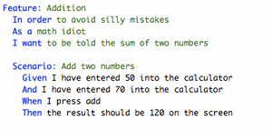
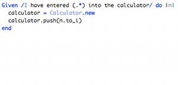
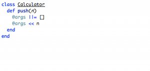
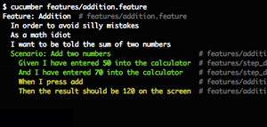

1: Describe behaviour in plain text
2: Write a step definition in Ruby
3: Run and watch it fail

4. Write code to make the step pass
5. Run again and see the step pass
6. Repeat 2-5 until green like a cuke

7 - ∞: Write your app
Cucumber lets software development teams describe how software should behave in plain text. The text is written in a business-readable domain-specific language and serves as documentation, automated tests and development-aid - all rolled into one format.
Cucumber works with Ruby, Java, .NET, Flex or web applications written in any language. It has been translated to over 20 spoken languages.
Testimonials
My attention-span is short so I may be forgetting something but I think Cucumber could be the most important piece of software released in 2008 for Ruby-based developers.
We are currently rolling out Cucumber to all projects within BBC Worldwide. We use it with great success in combination with Watir and Firewatir to automate our web acceptance tests. The natural language format is a great communication facilitator between all stakeholders.
—Aidy Lewis
If you’re looking for a higher level of abstraction in your tests, it’s definitely worth checking out.
—Mike Gunderloy on Ruby Inside
I finally looked into cucumber last week and immediately loved it. Within a couple hours I had several features written for an existing application. By the end of the next day, our whole team was writing cucumber features, and enjoying it! Cucumber seems to have brought back an excitement to testing that I haven’t felt for a while (since my first few weeks with RSpec).
Seeing what you guys are doing is just over-the-top cool. BDD is great, Domain Driven Design is great. Stuff I wish I knew 20 years ago.
I started using Cucumber yesterday and it was really easy.
Cucumber allows you to write feature documentation in Plain Text. It means you could sit with your Client or Business Analyst to write down the features to be build on your application.
—Lakshan Perera’s Ruby Advent 2008
Cucumber is fast becoming the standard for acceptance testing in Rails. Cucumber is a BDD tool for specification of application features and user scenarios in plain text. It’s powered by Ruby, supports over 20 spoken languages, and integrates with other testing platforms.
—Nick Quaranto of the GitHub Team – Featured project in December 2008
God DAMN I want a BDD tool for Python that runs as well as cucumber 0.0003 or whatever it’s called does already. Dammit.
Continuous Integration Blueprints: How to Build an Army of Killer Robots With Hudson and Cucumber.